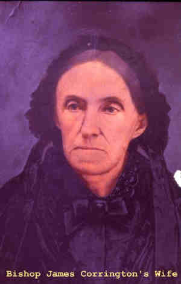

| 
Rhoda B. LARIMORE (1802-1881) |
Rhoda B. LARIMORE 4386
Noted events in her life were: • Census, 16 Sep 1850, Macoupin Creek, Greene Co., Illinois, USA. 4407 • Census, 3 Dec 1850, Lebanon, St. Clair Co., Illinois, USA. 4408 • Census, 7 Jul 1860, Jerseyville, Jersey Co., Illinois, USA. 4388 • Census, 8 Jun 1870, Alton, Madison Co., Illinois, USA. 4386 Rhoda married James Black CORRINGTON, son of Stephen CODDINGTON and Rachel Dacisers VEATCH, on 12 Sep 1824 in , Harrison Co., Kentucky, USA.2015 (James Black CORRINGTON was born on 21 Oct 1801 in , , Kentucky, USA 2015,4386 and died on 15 Nov 1880 in Saint Louis, St. Louis City, Missouri, USA.) |
Search using Google Custom Search:
Table of Contents | Surnames | Name List
This website was created 2 Mar 2025 with Legacy 10.0, a division of MyHeritage.com; content copyrighted and maintained by coddgenealogy at gmail d0t com